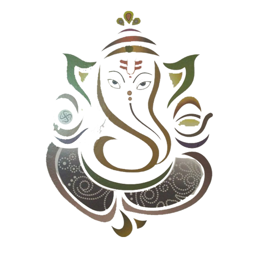

|  |
. Shri Ganesha G.This is an invitation of love with the goodwill that we should share this emotional moment, which is connected to the new silk by witnessing the seven steps of Saptapadi. Wedding moment Date Senior Krishna Paksha 5 Shake 1933 On monday 20/06/2011 at 11.15 am. (Decreased Moment) Wedding venue Bhagwati Hall and Lawn Opposite Gajanan Temple, Trimurti Nagar Chowk, Ring Road, Nagpur-440022 Yours sincerely Hundred Sharda Shri. Mrs. Mahesh Musle Kalpana Shri. Mrs. Sonbaji Musle. Shailja Shri. Saurabh Musle Mrs. Asha Shri. Mrs. Rambhauji Musle Aarti Shri. Mrs. Raghav Musle Shobha Shri. Ramesh Musle Piyush, Rohit, Mayur, Madhavi and all the Musle family |